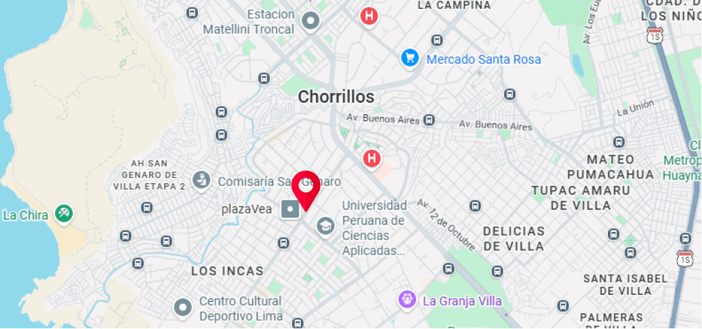
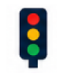
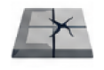
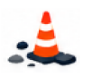

+100
REPORTES CIUDADANOS

15
DISTRITOS AFILIADOS

85%
TASA DE RESOLUCIÓN
Identifica, reporta y da seguimiento a la infraestructura vial de tu comunidad. Tus alertas llegan directamente al municipio para una rápida solución.
REPORTAR INCIDENCIA AHORA >
REPORTES CIUDADANOS
DISTRITOS AFILIADOS
TASA DE RESOLUCIÓN

Falta de señalización

Semáforos inoperativos

Baches y huecos
Alumbrado público fallando

Veredas deterioradas

Obstáculos o cables expuestos
El GPS detectará automáticamente tu ubicación exacta en el lugar del problema.
Toma una foto clara del daño vial y agrega una breve descripción para las autoridades.
Revisa en tiempo real cómo tu municipalidad atiende y resuelve tu reporte.
Recibe una notificación cuando el problema haya sido reparado.

"Me permitió reportar un bache en segundos y su respuesta fue rápida, excelente herramienta"
• Usuario verificadoDisponible para Android y iOS.